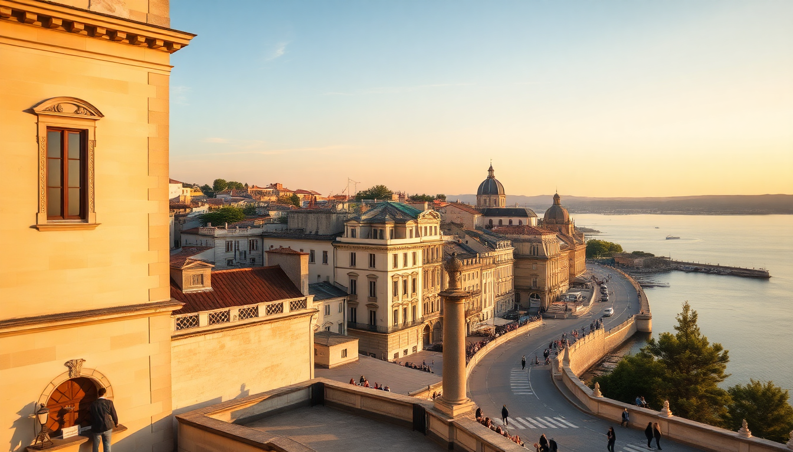

7 Days in France: Paris, Provence & the French Riviera

I planned this trip to hit three distinct Frances in one week: the monument-packed capital, the lavender-and-wine heart of Provence, and the sun-blasted coast of the Riviera. It’s a tight schedule, but with high-speed trains and a willingness to skip the fluff, it works. Here’s exactly how I did it, what I’d do again, and what I’d skip.
How do I get from Paris to Avignon and then to Nice?
The backbone of this trip is the TGV network. I booked all train tickets two weeks ahead on SNCF Connect — the prices jump if you wait. Paris Gare de Lyon to Avignon TGV station takes about 2 hours 40 minutes. From Avignon to Nice, it’s another 2 hours 20 minutes, with a brief stop in Marseille.
A few practical notes:
- Book first class on the TGV. It’s only €15–€30 more than standard, and you get quieter carriages, wider seats, and a meal tray with a drink.
- Avignon TGV station is outside the city walls. Hop on the shuttle bus (Navette) — it runs every 10 minutes and drops you at the Porte de l’Oulle gate in 10 minutes.
- Nice Ville station is central, right at the edge of the old town. Your hotel is a 5–10 minute walk from there.
- Don’t bother with rental cars for this route. Parking in Avignon’s old town is a nightmare, and the coastal traffic between Cannes and Nice can eat two hours of your afternoon.
What should I do in Paris with only two days?
I landed at Charles de Gaulle Airport and took the RER B directly to Gare du Nord. No taxi needed — it’s €11.40 and runs every 5 minutes. I stayed at Hôtel du Louvre on Rue de Rivoli. Yes, it’s pricey, but you can see the Musée du Louvre entrance from the lobby, and the Tuileries Garden is literally across the street. That saved me an hour of metro time each day.
Day one I walked: Louvre courtyard (skip the line for the Mona Lisa — it’s a zoo), through the Jardin des Tuileries, then up the Champs-Élysées to the Arc de Triomphe. Climb the arch at sunset — the view down the avenue is better than the Eiffel Tower, and the queue is shorter.
Day two I did Montmartre early (before 9 AM, when it’s still quiet), then Sacré-Cœur for the panorama. Lunch at Le Grenier à Pain on Rue des Abbesses — their baguette tradition is the real deal. Afternoon: Musée d’Orsay (book a timed slot online, no exceptions) for the Impressionists. Dinner at Bouillon Pigalle — cheap, loud, classic French onion soup and steak frites. No reservations, but the line moves fast.
What I’d skip: The Eiffel Tower summit. The view is fine, but the wait is 90 minutes, and you’re looking at a city you just walked through. The Latin Quarter is fine, but the Marais has better food and fewer hawkers.
How do I spend two days in Avignon and Provence?
Avignon’s old town is a walkable fortress. I stayed at Hôtel d’Europe, a 16th-century mansion turned hotel. It’s right off Place de l’Horloge, and the staff helped me book a half-day tour to the Lavender fields near Sault. That tour was the highlight of the trip — we left at 8 AM, drove through the Luberon villages, and were back by 1 PM.
Day one in Avignon: Palais des Papes (the audioguide is worth it — the building is huge and the history is wild), then the Pont Saint-Bénézet (the famous broken bridge). Lunch at Le Carré du Palais — their goat cheese salad with honey is simple and perfect. Afternoon: walk the Rue des Teinturiers — it’s a narrow street with old water wheels and a handful of quiet wine bars.
Day two: take the Navette back to the TGV station and catch a local train to Arles (20 minutes). Arles has the Roman amphitheater and the Fondation Vincent van Gogh. The amphitheater is less crowded than the Colosseum, and you can walk right onto the arena floor. Lunch at Le Café Van Gogh — yes, it’s touristy, but the terrace is the one from his painting, and the pissaladière (Provençal onion tart) is good.
What I’d skip: The Pont d’Avignon boat tours. The bridge is the attraction. The boats just show you the same view from a different angle.
Is Nice worth the trip from Avignon?
Yes, but set expectations. Nice is not a beach town in the Caribbean sense — the Promenade des Anglais is a pebble beach, not sand. Bring water shoes or a thick towel. That said, the water is clear and cold, and the Baie des Anges is stunning at sunrise.
I stayed at La Pérouse, a hotel carved into the hill near the Castle Hill park. The rooms have private terraces overlooking the bay. It’s a 10-minute walk from the old town, which is exactly far enough to escape the noise.
Day one: walk the Promenade, then climb Castle Hill (or take the elevator at the park entrance) for the best view of the city. Lunch at Chez Acchiardo in the old town — their ravioli à la daube (beef stew ravioli) is the best thing I ate in Nice. Afternoon: Marc Chagall National Museum. It’s small, quiet, and the stained-glass windows are breathtaking in the literal sense — they stop you mid-sentence.
Day two: take the TER regional train to Villefranche-sur-Mer (10 minutes) and walk down to the Plage des Marinières. It’s calmer than Nice’s beaches, and the pastel houses behind the bay make for a good photo. Lunch at La Mère Germaine — the bouillabaisse is €38 but worth every cent. Train back to Nice in the afternoon.
What I’d skip: The Russian Orthodox Cathedral. It’s pretty, but unless you’re a architecture buff, it’s a 15-minute photo stop, not a destination.
What should I eat on this trip?
France is a regional food country. Don’t eat a croissant in Avignon expecting it to taste like one in Paris. Here’s what I ate and where:
- Paris: Bouillon Pigalle for steak frites and crème caramel. Le Comptoir de la Gastronomie for foie gras ravioli (splurge — €28, but worth it).
- Avignon: Le Carré du Palais for goat cheese salad. Les Halles d’Avignon (indoor market) for a quick lunch of tapenade and fresh bread — grab a table at the central bar.
- Nice: Chez Acchiardo for ravioli. La Mère Germaine in Villefranche for bouillabaisse. Fenocchio Glacier for ice cream — try the lavender or olive oil flavors.
When is the best time for this itinerary?
June and September are the sweet spots. July and August are packed — Avignon’s Festival d’Avignon in July means theater crowds and inflated hotel prices. Nice in August is a wall of tourists on the Promenade. I went in mid-September: lavender fields in Provence were still purple, the sea was warm enough to swim, and Paris had that back-to-school quiet.
Weather breakdown:
- June: 22–28°C, sunny, lavender peaks mid-month
- September: 20–26°C, fewer crowds, swimming still good
- July–August: 30–35°C, crowded, expensive — avoid if you can
- November–March: Too cold for the coast, and many Provençal restaurants close for the season
FAQ
How much time should I spend in each city? Two days each in Paris and Avignon, three in Nice. Paris is big, but two days with a tight focus (Louvre, Montmartre, Musée d’Orsay) is enough for a first visit. Avignon needs two days to see the city and do a half-day lavender tour. Nice can be done in two, but three gives you a day trip to Villefranche or Antibes without rushing.
Is the train the best way to move between cities? Yes. The TGV is faster and more comfortable than driving. Paris to Avignon is 2h40, Avignon to Nice is 2h20. Driving adds at least an hour per leg due to traffic and parking. Book on SNCF Connect two weeks ahead for the best fares — a first-class ticket from Paris to Avignon costs about €60–€80 if you book early.
Can I see the lavender fields without a tour? You can, but I don’t recommend it. The fields near Sault are 45 minutes east of Avignon by car, and the roads are narrow and winding. The tour I booked (through the hotel concierge) cost €65 per person, included a guide who knew the best fields without the crowds, and dropped me back at Place de l’Horloge by 1 PM. Worth every euro.
Conclusion
- Book TGV trains two weeks ahead — first class is worth the small upgrade for quieter carriages
- Stay central — Hôtel du Louvre in Paris, Hôtel d’Europe in Avignon, La Pérouse in Nice — proximity saves hours
- Skip the Eiffel Tower summit and the Pont d’Avignon boat tours — both are time sinks with better alternatives nearby
- Eat regionally — steak frites in Paris, goat cheese in Avignon, bouillabaisse in Nice — don’t order a croissant in Provence
- Go in June or September — July and August are overcrowded and overpriced, especially in Nice and Avignon